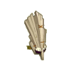
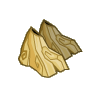
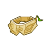
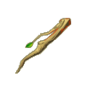

Menu barbok'you

| Niveau 134 | Masque de l'Abrakleur Clair | ||
|---|---|---|---|
|  | Recettes : | Caractéristiques : | Conditions : |
| 69 Souche de l'abrakleur clair 17 Carpelle de brouture 14 Calice de fécorce 13 Noeud de l'abrakleur clair 12 Duvet du kilibriss 3 Ecorce de fécorce 2 Coco du bitouf aérien 1 Peau du rasboul majeur |
+26 à 40 force +26 à 40 agilité +21 à 30 sagesse +151 à 200 vitalité +6 à 8 dommages +11 à 15 prospection +11 à 15% dommages +6 à 10% résistance air +6 à 10% résistance terre |
||
| Remarques : | |||
| Niveau 136 | Bottes de l'Abrakleur Claire | ||
|---|---|---|---|
| Recettes : | Caractéristiques : | Conditions : | |
|  | 42 Bois de bambou 12 Bois de bambou sacré 1 Ecorce du tynril 26 Bave du kaskargo 16 Noeud de l'abrakleur clair 8 Boomerang du warko marron 61 Souche de l'abrakleur clair 1 Rune Ga Pme |
+1 PM +101 à 150 vitalité +26 à 40 agilité +26 à 40 force +26 à 35 sagesse +6 à 8 dommages +6 à 10 resistance neutre +6 à 10 resistance eau 6 à 10% resistance eau |
aucune |
| Remarques : | |||
| Niveau 128 | Ceinture Claire en Abrakleur | ||
|---|---|---|---|
| Recettes : | Caractéristiques : | Conditions : | |
|  | 68 Souches de l'abrakleur clair 35 Bois de bambou 28 Sépale de nerbe 13 Noeud de l'abrakleur clair 5 Coco du bitouf aerien 3 Ecorce de chiendent 3 Ecorce de floribonde 1 Ambre du tynril |
+151 à 200 vitalité +31 à 45 force +31 à 45 agilité +31 à 40 sagesse 6 à 10% dommages +11 à 20 prospection +201 à 300 initiative 6 à 10% resistance neutre 6 à 10% resistance feu |
|
| Remarques : | |||
| Niveau 132 | Branche de l'Abrakleur Claire | |||
|---|---|---|---|---|
| Recettes : | Effets : | Caractéristiques : | Conditions : | |
|  | 52 Souches de l'abrakleur clair 34 Sépales de nerbe 28 Calices de fécorce 9 Noeuds de l'abrakleur clair 3 Ecorces de floribonde 2 Ecorces de chiendent 1 Peau lacérée du tynril |
Dom : 7 à 16 (neutre) Dom : 7 à 16 (air) Vole : 4 à 6 PDV (terre) +101 à 150 vitalité +26 à 40 force +26 à 40 agilité +26 à 40 sagesse +11 à 15 prospection 6 à 8% resistance terre 6 à 8% resistance neutre |
PA : 5 Portée : 2 à 5 Bonus CC : +4 Critique : 1/10 Echec : 1/50 |
agilité > 200 force > 200 |
| Remarques : | ||||
| 1 Items | Aucun bonus |
|---|---|
| 2 Items | +30 Vitalité / +2 Dommages / +2 CC |
| 3 Items | +50 Vitalité / +3 Dommages / +3 CC / + 1 Portée |
| 3 Items | +80 Vitalité / +6 Dommages / +5 CC / + 1 Portée / +20 sagesse |
Dofus est un MMORPG édité par Ankama." Barbok " est un site non-officiel sans aucun lien avec Ankama.
Toutes les illustrations sont la propriété d'Ankama Studio et de Dofus. Le contenu de ce site a été rédigé initialement par Immortal, il ne s'agit que d'une remise en ligne effectuée par Eternal Games.